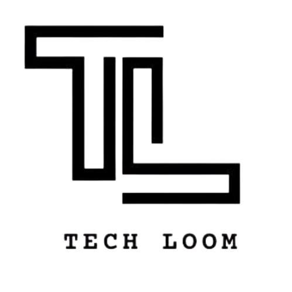

 TECHLOOM
AIFT
Home
About
Contact
ADVANCED AI
FARMING TECHNOLOGY (AIFT)
DEVELOPED BY TECHLOOM,
A TEAM OF ENTHUSIASTIC PEOPLE
FOCUSED ON SOLVING REAL TIME PROBLEMS OF
THE SOCIETY USING TECHNOLOGY
DASHBOARD